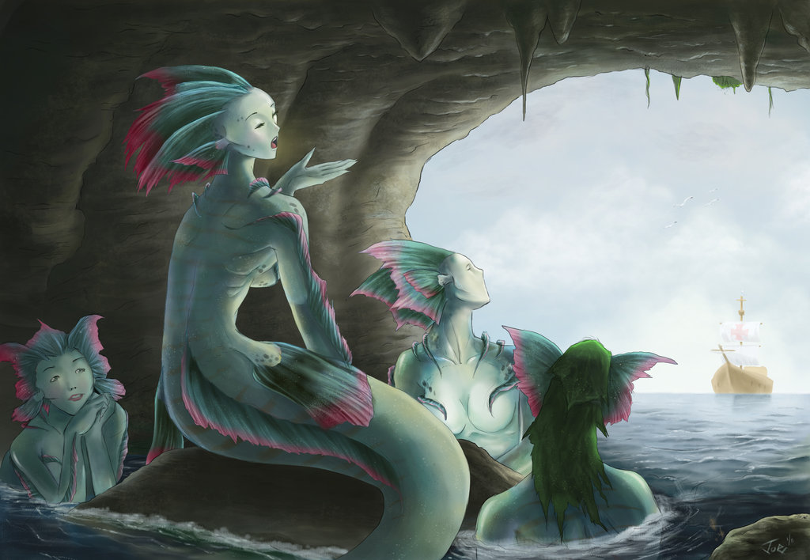

Sirena

The Sirena (sometimes spelled as Siren) is a mythical creature in Filipino folklore that shares similarities with other mermaid legends from various cultures but has distinct characteristics rooted in Philippine myth. The Sirena is commonly depicted as a beautiful, half-woman, half-fish creature that inhabits the waters—rivers, lakes, and seas—of the Philippines. Her beauty, enchanting voice, and dangerous nature make her both alluring and perilous, making her one of the most captivating and fearsome beings in Filipino mythology.
Appearance
The Sirena is typically described as a female figure with the upper body of a woman and the lower body of a fish, resembling a mermaid. Her appearance is often one of breathtaking beauty, with long, flowing hair and a mesmerizing, captivating voice. Some variations of the myth also suggest that the Sirena can have scales covering her body, particularly her tail, which shines like pearls or fish scales, making her look otherworldly and ethereal.
-
Upper Body (Human-Like): The Sirena has the upper torso of a woman, often with long, black hair that floats effortlessly in the water, giving her a mystical, siren-like allure. Her features are described as stunningly beautiful, drawing people to her through sheer physical appeal. She is sometimes shown to be topless or wearing minimal clothing, emphasizing her connection to the natural world.
-
Lower Body (Fish-Like): The Sirena’s lower half is where the mermaid-like features appear. Instead of legs, she has the tail of a fish, often described as shimmering, iridescent, and resembling the tail of a fish or a sea creature. In some depictions, her tail is long and serpentine, allowing her to glide effortlessly through the water.
-
Other Features: The Sirena may also have glowing eyes, a hauntingly beautiful voice, and an enchanting aura that mesmerizes those who hear her song or gaze upon her. She is often associated with the moonlit waters, adding to her otherworldly nature.
Behavior and Abilities
The Sirena is known for both her alluring beauty and her dangerous, unpredictable behavior. While she is capable of being a benevolent figure in some myths, she is most often portrayed as a perilous seductress who lures men or sailors to their doom.
-
Seduction and Enchantment: One of the most famous abilities of the Sirena is her enchanting voice. Like the Greek sirens, the Filipino Sirena uses her melodious, haunting song to seduce and lure unsuspecting men, especially fishermen or sailors, into the water. The Sirena’s voice is said to be so beautiful and hypnotic that it can compel a person to follow her, even to the point of abandoning their boats or safety to dive into the water.
-
Fatal Attraction: In many tales, once a man is lured into the water by the Sirena’s song, he either drowns or becomes trapped in her underwater realm. She may either drag him to the depths or simply disappear after leading him into the dangerous waters, leaving him to face certain death or disappear without a trace.
-
Drowning and Water Traps: While the Sirena’s beauty and voice may initially seem like a gift, they are also deadly traps. She is often portrayed as a vengeful or mischievous creature who plays with the lives of her victims. She may lure them to the shore, causing them to drown in treacherous waters, or she may sink their boats. In some stories, she uses her tail to cause powerful waves or whirlpools that drag people into the deep, claiming them as victims.
-
Guardian of the Sea: In some versions of the myth, the Sirena is seen as a protector or guardian of the ocean, rivers, and lakes. She might be seen as a creature who keeps watch over the waters, especially in relation to fishermen or those who harm the environment. In this role, she can be less malevolent and more of a figure who punishes those who take too much from the sea or disrespect its power.
-
Shape-Shifting: Some versions of the Sirena myth suggest that she can change her form, taking on the appearance of a human woman to seduce men more easily, or even transforming into a completely different sea creature to hide her true nature. This shape-shifting ability makes her even more dangerous, as she can deceive and manipulate those who cross her path.
Vulnerabilities and Weaknesses
Despite her dangerous abilities, the Sirena has several weaknesses that can be exploited by those who are familiar with her lore.
-
Sacred Objects or Offerings: In some Filipino myths, the Sirena can be warded off with the use of sacred objects or charms. Offerings such as food, salt, or other items tied to spirituality can drive her away or appease her, particularly if they are placed in the waters she haunts.
-
Respect for the Water: Some versions of the myth suggest that showing respect for the ocean or the water is a way to avoid the Sirena's wrath. Those who venture into the water in a humble or respectful manner, without greed or malicious intent, are less likely to fall victim to her charms.
-
Breaking the Spell: If a person is enchanted by the Sirena’s song, they may be able to break her spell if they manage to resist her song or fight the compulsion to follow her into the water. In some versions of the myth, the Sirena may be forced to release her victim if they manage to demonstrate strength of will or courage.
-
Moon and Tide Influence: In certain tales, the Sirena's power is linked to the phases of the moon and the tides. She may be more active during full moons or at night when the waters are calm, and her song can carry further. This suggests that one way to avoid her influence is to remain cautious or to avoid the waters during these specific times.
Culture Influence
Cultural Influence
The Sirena is part of a long tradition of mermaid-like creatures that exist in the folklore of many cultures around the world. However, the Filipino Sirena has its own unique characteristics that tie it to the country's rich mythological and spiritual traditions.
The concept of mermaids or water spirits is common in various Southeast Asian cultures, and the Filipino Sirena draws on this tradition. The idea of the Sirena reflects the Filipino connection to the sea, the importance of water as both a source of life and a place of mystery, and the deep reverence for nature and the unknown.
Historically, the Sirena also serves as a warning to sailors and fishermen to respect the sea and its dangers. Just as many cultures have tales of dangerous sirens or mermaids to caution against the perils of the ocean, the Sirena in Filipino folklore often embodies the treacherous aspects of nature that, if approached recklessly, can be deadly.